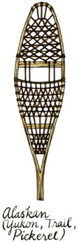

Snowshoeing, by Gene Prater ($7.95 in paperback from The Mountaineers Books, 306 2nd Ave. W., Seattle, WA 98119), is well written and highly informative. The author hails from Washington State and was one of the developers of the western-style 'shoe, so?though any would -be snowshoe tripper can benefit from Prater's book?his observations hold special interest for westerners.